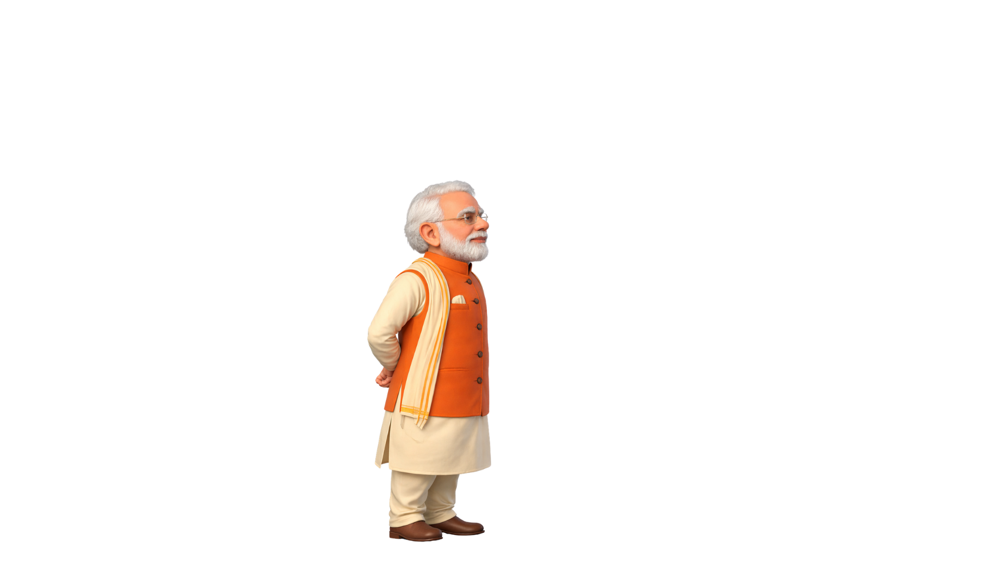
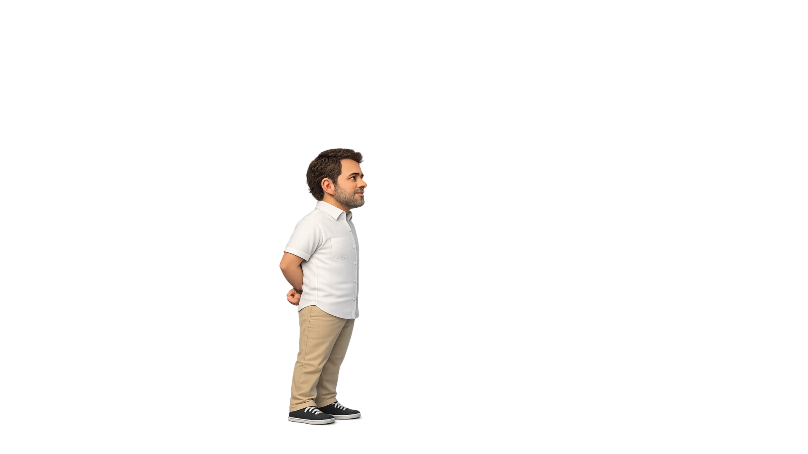

Pick a character to play as. The other will be your AI competitor.
GREEN LIGHT — Run toward the finish line!
RED LIGHT — STOP immediately!
Press → or D to move right.
On mobile, hold the MOVE button.
Cross both screens to reach the finish line!
If the watcher catches you moving… you lose!